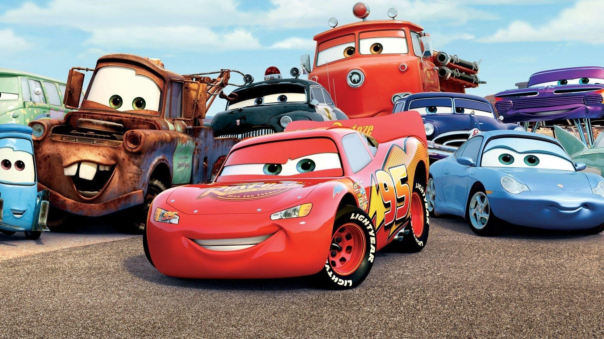
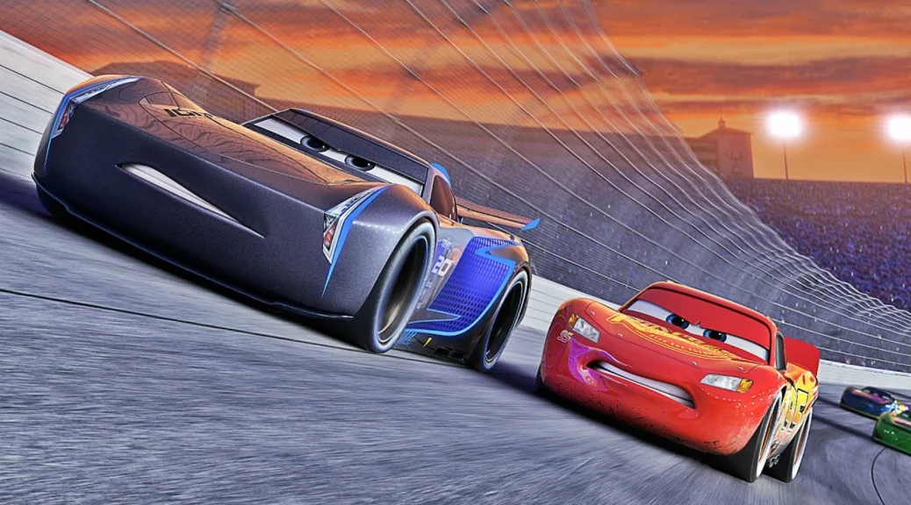

Gallery



Ini adalah halaman berisi artikel dengan kategori Karakter, silahkan pilih salah satu artikel di bawah dan selamat membaca!
Lihat ArtikelDia adalah Lightning McQueen yang menjadi tokoh utama dalam film Cars. Mcqueen merupakan mobil balap yang diproduksi pada tahun 2006 dan dia sangat terobsesi untuk memenangkan piala Piston. Pada awal kemunculannya, McQueen memiliki sikap yang sangat angkuh dan tidak peduli dengan karakter di sekelilingnya. Hidup McQueen berubah setelah dia bertemu dengan teman-temannya di Radiator Springs. Di sana, dia belajar hal-hal baru dan menjalin pertemanan dengan Mater, Sally, Doc, Guido, dan masih banyak lagi. McQueen perlahan pun luluh dan dia menjadi karakter yang ramah.
Baca lebih lanjut...Karakter terbaik Cars berikutnya adalah Mater yang merupakan sahabat terbaik dari McQueen. Di Radiator Springs, Mater adalah satu-satunya mobil derek yang ada di sana. Mater merupakan karakter yang ceria dan senang bercanda dengan karakter lain. Selain itu, dia juga senang membuat prank ke orang lain. Salah satu hobi gila Mater adalah dia seringkali mengganggu para traktor yang tengah tertidur di malam hari, meskipun Mater sangat jahil.
Baca lebih lanjut...Doc Hudson adalah salah satu legenda dalam dunia balapan di film Cars. Dia merupakan mobil balap yang sangat terkenal dalam sejarah dan pernah menjuarai piala Piston sebanyak tiga kali dan masih memegang rekor kemenangan terbanyak dalam satu musim. Karier Doc berakhir setelah dia mengalami insiden kecelakaan pada saat balapan. Doc kemudian sampai di Radiator Springs dan memutuskan untuk hidup normal. Selain bertugas sebagai hakim, Doc juga berperan sebagai dokter di sana. Sosok Doc sangat dihormati oleh para warga Radiator Springs.
Baca lebih lanjut...Sally adalah karakter mobil cantik berwarna biru langit yang menjadi pacar McQueen dalam film Cars. Dia dulunya seorang pengacara di Los Angeles, tetapi dia bosan dengan kehidupannya dan memilih pindah ke Radiator Springs. Sally sangat cantik dan menjadi primadona di Radiator Springs. Dia juga sangat cerdas. Setelah kedatangan McQueen di Radiator Springs, Sally pun jatuh cinta kepadanya dan mereka pun berpacaran. Uniknya, Sally memiliki nama julukan kepada McQUeen, yaitu Stickers.
Baca lebih lanjut...Guido adalah karakter truk forklift atau truk garpu yang bekerja bersama Luigi. Sama seperti bosnya, Guido sangat terobsesi dan merupakan fans berat balapan sirkuit. Dia juga bercita-cita untuk menjadi kru pit profesional dan menghentikan mobil balapan secara real. Mimpi Guido pun terpenuhi ketika dia menjadi kru pit McQueen di bawah arahan Doc Hudson. Meskipun sempat diejek oleh kru pit Chick, Guido pun menunjukkan bakat aslinya. Dia mampu mengganti ban McQueen dalam sekejap mata dan membuat kru pit Chick terdiam seribu bahasa.
Baca lebih lanjut...Berikutnya, ada Luigi yang merupakan bos dari Guido. Luigi menjalankan sebuah bisnis ban lokal di Radiator Springs. Toko milik Luigi menawarkan kolek si ban terbaik dari daerah barat Mississipi. Tokonya juga terkenal karena layanannya yang sempurna, harga yang kompetitif, dan tentu saja karena pemiliknya yang stylish. Sama seperti Guido, Luigi juga merupakan penggemar berat balapan ferrari. Dia sangat senang ketika pembalap ferrari, yakni Michael Schumacher mampir ke tokonya untuk mengganti ban.
Baca lebih lanjut...